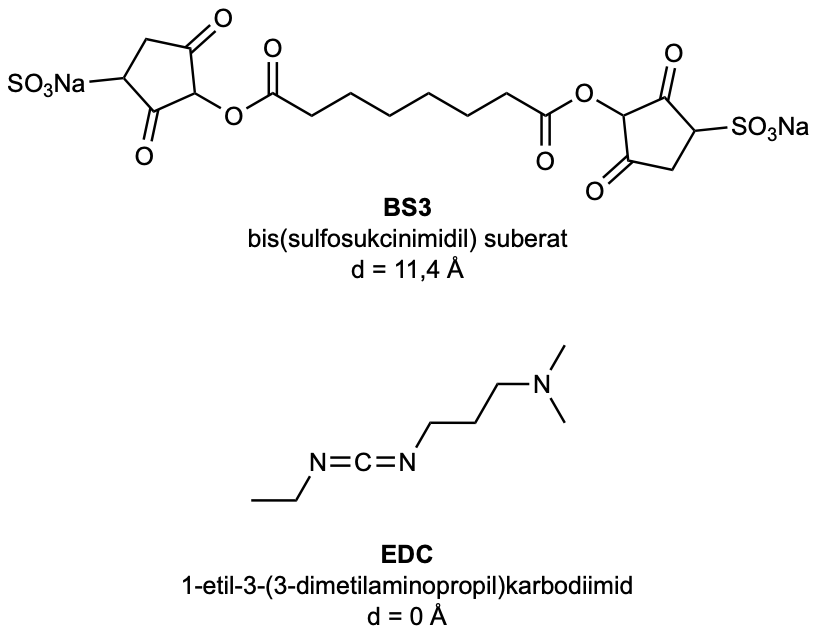
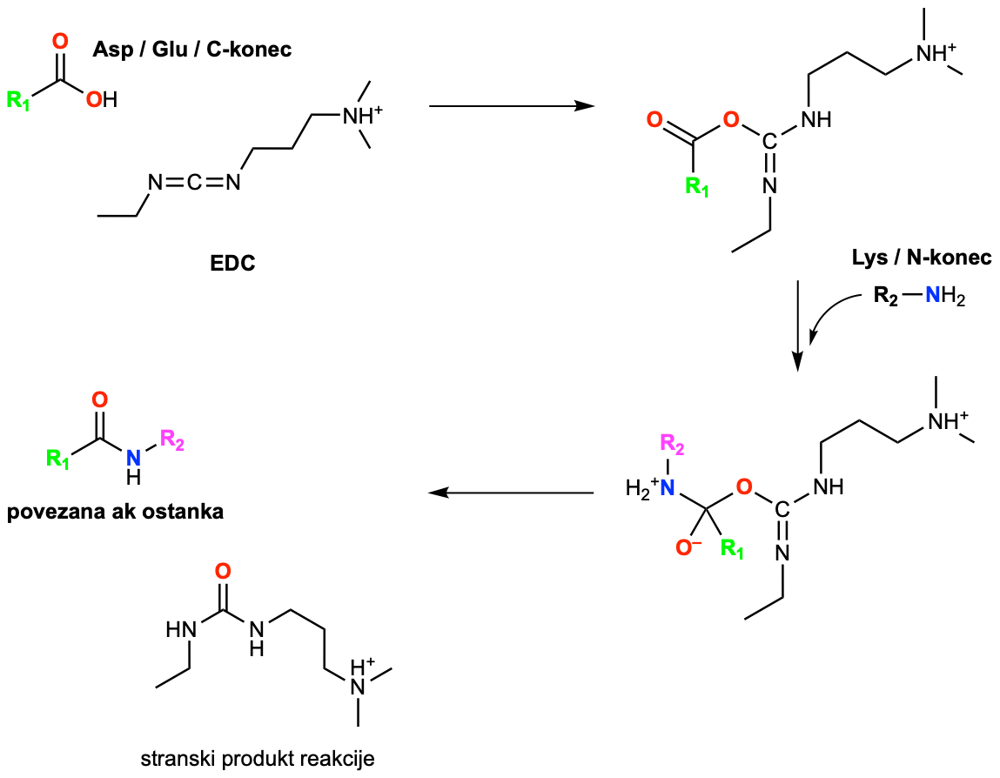

Modeliranje proteinskega kompleksa z uporabo XL-MS podatkov#
Prevideno trajanje: približno 2 uri
Programi: UCSF ChimeraX z dodatkom XMAS, HADDOCK 2.4, DisVis
Vhodne datoteke: IL7.pdb, IL7R.pdb, BS3.tsv, EDC.tsv
Namen vaje#
Namen vaje je sezaniti se z uporabo kemijskih prečnih povezav (XL, angl. cross-links) kot prostorskih omejitev pri modeliranju medproteinskih kompleksov in sicer na primeru modeliranja kompleksa med interlevkinom-7 (IL-7) in njegovim receptorjem (IL-7Rα).
Biološko ozadje#
Interlevkin 7 (IL-7) je citokin, ki sodeluje pri razvoju, preživetju in homeostazi limfocitov, zlasti celic T. Ima značilno zgradbo citokinov s štirimi α-vijačnicami.
Receptor IL-7Rα je podenota receptorja, ki prepozna IL-7. Pri signalizaciji sodeluje še receptorska podenota γc, ki je ne bomo vključili v naše modeliranje. Vezava citokina omogoča aktivacijo signalnih poti JAK/STAT. Spremembe v delovanju receptorsko-signalnega sistema so povezane z motnjami razvoja in delovanja imunskega sistema.
V tej vaji modeliramo interakcijo dveh proteinov, IL-7 in zunajceličnega dela IL-7Rα. Datoteki s strukturo posameznih komponent kompleksa sta bili pripravljeni na osnovi eksperimentalno določenih struktur (zbirka PDB). Referenčna struktura njunega kompleksa je sicer znana (PDB 3DI2), vendar je ne bomo uporabili kot vhodni podatek za modeliranje, temveč le za namen preverjanja pravilnosti napovedi kompleksa.
O podatkih: Prečne povezave izhajajo iz literature, a so bile rekonstruirane za uporabo v XMAS.
XL-MS#
Splošno#
Kemijsko prečno povezovanje proteinov v povezavi z masno spektrometrijo (XL-MS) omogoča odkrivanje medproteinskih interakcij v vzorcih čistih proteinov, celičnih lizatih, izoliranih organelih in tudi neposredno v celicah. Pri tej metodi s kemičnim reagentom kovalentno povežemo reaktivne skupine aminokislinskih ostankov, ki so med reakcijo dovolj blizu v prostoru. Če povezava nastane med dvema različnima proteinoma, lahko z identifikacijo povezanih peptidov ugotovimo, katera proteina sta bila v neposredni prostorski bližini. Tako lahko prepoznamo tudi šibke ali prehodne interakcije, ki se pri izolaciji proteinskih kompleksov, ki niso tako povezani, pogosto izgubijo. Pri analizi na ravni proteoma identificirane povezave združimo v mrežo proteinskih stikov ter raziskujemo organizacijo kompleksov in povezave med celičnimi procesi. Za prečno povezovanje znotraj nepoškodovanih celic moramo uporabiti reagent, ki prehaja skozi celično membrano, medtem ko te zahteve pri analizi lizatov ni. Pomembna prednost XL-MS je, da poleg identitete proteinskih partnerjev pogosto določi tudi konkretna aminokislinska ostanka, med katerima je nastala povezava. Vendar prostorska bližina sama po sebi še ne dokazuje stabilne ali funkcionalno pomembne interakcije, saj lahko zajamemo tudi kratkotrajna “srečanja” proteinov. Pri kompleksnih vzorcih je zato posebej pomembno ustrezno omejiti delež napačnih identifikacij, in sicer tako na ravni povezanih peptidov kot na ravni sklepov o proteinskih interakcijah.
Pri raziskovanju izbranega proteinskega kompleksa je glavni cilj običajno določiti medsebojno razporeditev podenot in preveriti predlagane strukturne modele. Medproteinske povezave omejujejo možne lege in orientacije podenot, povezave znotraj posameznega proteina pa dajejo informacije o njegovi konformaciji in razporeditvi domen. Če poznamo strukture posameznih komponent, lahko te podatke uporabimo za njihovo sestavljanje v model kompleksa. XL-MS je posebej uporabna pri velikih, gibljivih ali heterogenih kompleksih, pri katerih je določanje celotne strukture z eno samo metodo zahtevno. V integrativni strukturni biologiji jo zato povezujemo s krioelektronsko mikroskopijo, rentgensko kristalografijo, NMR, SAXS in računskimi napovedmi struktur. Z njo lahko preverjamo tudi napovedane vezavne površine ter razlikujemo med alternativnimi modeli kompleksa. Primerjava povezav v različnih razmerah, na primer ob prisotnosti liganda ali po mutaciji, lahko razkrije konformacijske spremembe in preurejanje podenot. Ker eksperiment zajame populacijo molekul, lahko različne povezave izvirajo iz različnih konformacij, zato ni nujno, da jih lahko pojasnimo z eno samo strukturo. XL-MS zato praviloma ne zagotovi popolne atomske strukture, temveč omejeno število prostorskih informacij, ki pomagajo pri gradnji, izbiri in vrednotenju modelov.
Prečni povezovalci#
Pri XL-MS se uporabljajo različni povezovalci, ki reagirajo z različnimi skupinami in imajo različne dolžine “ročice”. Kot aminski povezovalec z daljšim mostičkom (ročico) se pogosto uporablja BS3, kot povezovalec z “ničelnim” mostičkom pa najpogosteje EDC.

BS3 oziroma bis(sulfosukcinimidil)suberat je vodotopen homobifunkcionalni reagent, kar pomeni, da ima na obeh koncih enaki reaktivni skupini. Njegova sulfo-NHS-estra reagirata predvsem s primarnimi aminskimi skupinami stranskih verig lizinskih ostankov in prostih N-koncev proteinov ter tvorita stabilni amidni vezi. V nastali povezavi ostane vgrajen povezovalni mostiček z dolžino približno 11,4 Å, ki določa razdaljo med povezanima aminskima skupinama, ne pa med atomoma Cα. BS3 slabo prehaja skozi celične membrane, zato je primeren predvsem za vzorce izoliranih proteinov, lizate in dostopne površine celic. EDC oziroma 1-etil-3-(3-dimetilaminopropil)karbodiimid deluje drugače, saj aktivira karboksilne skupine aspartatnih ali glutamatnih ostankov ali celo prostega C-konca proteina. Aktivirana karboksilna skupina lahko nato reagira s primarno aminsko skupino lizinskih ostankov ali N-konca in tvori neposredno amidno vez. EDC se ne vgradi v končni produkt, zato ga označujemo kot povezovalec z ničelno dolžino mostička, čeprav razdalja med atomoma Cα povezanih ostankov seveda ni nič. Pogosto ga uporabljamo skupaj z NHS ali sulfo-NHS, ki stabilizira aktivirani intermediat in izboljša učinkovitost povezovanja. BS3 tako praviloma povezuje dve aminski skupini, EDC pa karboksilno in aminsko skupino, zato reagenta dajeta komplementarne informacije o proteinskih stikih.

Splošni potek eksperimenta#
Pripravo vzorca v pogojih, ki čim bolje ohranjajo relevantno strukturo in interakcije proteinov ter omogočajo izbrano kemijsko reakcijo.
Po dodatku povezovalca reakcijo časovno omejimo in ustavimo (npr. pri BS3 pogosto z dodatkom spojine s primarno amino skilino, npr. Tris), saj lahko pretirano povezovanje povzroči nastanek neželenih produktov oz. nespecifične povezave.
Proteine nato običajno denaturiramo, reduciramo in alkiliramo cisteinske ostanke ter jih s proteazami, najpogosteje s tripsinom (cepi za lizinskimi in argininskimi ostanki), razgradimo v peptide.
Ker so prečno povezani peptidi navadno maloštevilni v primerjavi z nepovezanimi, jih lahko pred analizo obogatimo oziroma vzorec frakcioniramo. Ta korak je možen pri uporabi posebnih povezovalcev, ki imajo ustrezno “oznako”, npr. pri fosforilni skupini povezovalca PhoX lahko uporabimo IMAC z Fe3+ ioni.
Sledi ločevanje s tekočinsko kromatografijo in tandemska masna spektrometrija, pri kateri iz mas prekurzorskih ionov in njihovih fragmentov določimo zaporedji obeh peptidov ter mesti povezave.
Specializirana programska oprema pri iskanju upošteva zaporedja proteinov (+ izrbane modifikacije), reaktivnost in masni prispevek povezovalca, rezultate pa filtriramo glede na zanesljivost identifikacije.
Dobljene aminokislinske pare preslikamo na strukture ali modele in jih pretvorimo v prostorske omejitve, običajno zgornje meje dovoljenih razdalj. Pri določanju teh meja upoštevamo dolžino povezovalca, dolžino in gibljivost stranskih verig, konformacijsko gibljivost proteina ter izbiro merjenih atomov, zato se za BS3 pogosto uporabljajo meje okoli 25–30 Å med atomoma Cα, odvisno od modelirnega pristopa. Upoštevamo lahko tudi pot povezovalca po površini, saj kratka ravna razdalja skozi notranjost proteina še ne pomeni, da je povezava fizično izvedljiva.
Omejitve nato uporabimo pri računalniškem umeščanju in vrednotenju podenot, pri čemer odsotnost določene povezave ne dokazuje velike razdalje, njena kršitev v modelu pa lahko kaže na napačen model, alternativno konformacijo ali napačno identifikacijo.
Vprašanja#
Kakšna je kemijska razlika med povezovalnima reagentoma BS3 in EDC? Zakaj uporabimo različno velike razdaljne omejitve?
Zakaj povezave, prikazane med dvema še neporavnanima proteinoma, ne moremo oceniti zgolj po trenutni dolžini v ChimeraX?
Zakaj je pri kombiniranju obeh tipov podatkov pomembno, da vsak cross-link ohrani svojo lastno razdaljno mejo?
Ali manjši dostopni interakcijski prostor sam po sebi dokazuje, da je napovedana orientacija pravilna?
Kaj pomenijo kršitve posameznih omejitev? Ali je vsaka kršitev dokaz napačne eksperimentalne identifikacije?
V čem se izhodna podatka programov HADDOCK in DisVis bistveno razlikujeta?
Kako bi lahko preverili pravilnost najboljšega modela, če bi imeli na voljo neodvisno eksperimentalno strukturo kompleksa?
Vajo sta pripravila Jošt Hočevar in Miha Pavšič.